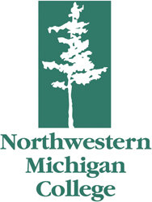

Norwestern Michigan College
Founded in 1951, Northwestern Michigan College, known as NMC to local residents, is a community college in Traverse City, Grand Traverse County, Michigan. Its annual enrollment is around 5,100 (Spring 2010) students. NMC offers associate's degrees and professional certificates, bachelor's degrees through the Great Lakes Maritime Academy and Great Lakes Water Studies Institute, and eight partner universities grant bachelor's and master's degrees through NMC's University Center. NMC has a branch campus on Grand Traverse Bay that houses the Great Lakes Culinary Institute, Great Lakes Maritime Academy, Great Lakes Water Studies Institute and Hagerty Conference Center. Another branch campus near Cherry Capital Airport is home to NMC's aviation and automotive service technology programs, and offers training in manufacturing, construction, renewable energy and information technology. NMC also has an observatory, and a nursing program in conjunction with Munson Medical Center. The campus is home to WNMC-FM, a community-supported radio station which broadcasts at 90.7 FM. This station began as a student organization in 1967 and still receives significant funding through student fees.
